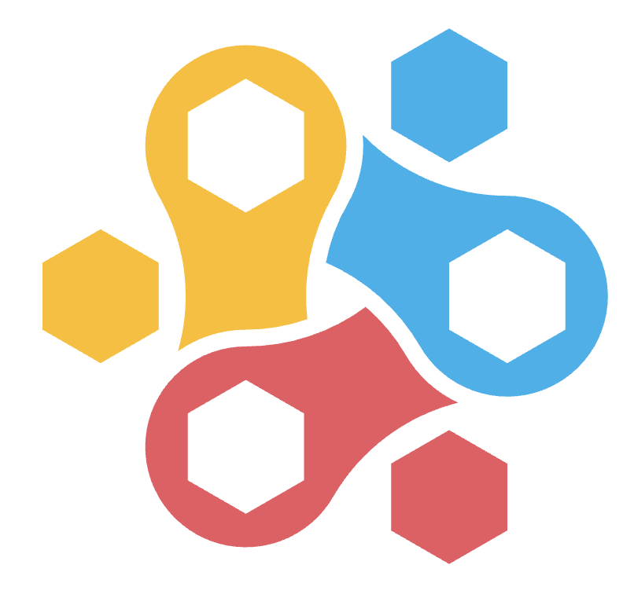
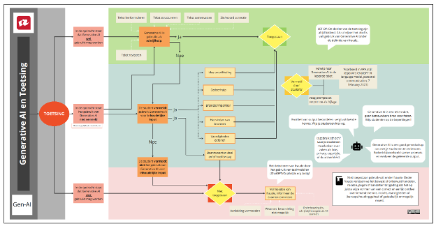

When you grow up, you tend to get told that the world is the way it is and your life is just to live your life inside the world, try not to bash into the walls too much, try to have a nice family, have fun, save a little money. That's a very limited life. Life can be much broader, once you discover one simple fact, and that is that everything around you that you call "life" was made up by people that were no smarter than you. And you can change it, you can influence it, you can build your own things that other people can use. Once you learn that, you'll never be the same again.
Modulehandleiding
monodisciplinair traject - teaching tech & team
Explorative Software Development in Education - Semester 6
Code: INFESD01ED
Studiejaar: 2025-2026
ECTS: 30
Datum: 30-01-2026
De opdracht
Introductie
Een spin-off van de TU Delft heeft een digitaal platform ontwikkeld voor leerlingen in de bovenbouw van het basisonderwijs of de onderbouw van het voortgezet onderwijs: EduvolutionX. Docenten kunnen dit platform als tool inzetten om leerlingen technische vaardigheden te laten ontwikkelen. Het platform bestaat uit de volgende onderdelen:
- Een editor om lessen te maken om iets te bouwen
- Een editor om een computerprogramma bij elkaar te klikken
- Een editor om lessen te maken om een Arduino te koppelen
- Een omgeving om lessen te volgen
Vanaf half wordt het platform gebruikt op een aantal deelnemende scholen.
De opdracht
Samen met jouw projectteam ga jij het digitale platform verbeteren zodat leerlingen niet alleen technische vaardigheden leren, maar ook ontdekken dat effectieve communicatie en samenwerking essentieel zijn om tot goede technische oplossingen te komen.
Je doet dit door als team onderdelen van het platform te "hacken" (creatief hergebruiken) en nieuwe onderdelen te ontwerpen en realiseren die leerlingen stimuleren om samen te werken, kennis te delen en gezamenlijke keuzes te maken tijdens het leren van technische vaardigheden. Tijdens deze opdracht werk je intensief samen binnen je projectteam en ontwikkel je bewust je samenwerkingsvaardigheden; dit vormt een expliciet onderdeel van het leerproces.
Het platform is al ontwikkeld. Jullie werken daarom met bestaande software, waarvoor jullie volledige toegang krijgen. Daarnaast kun je inloggen als leerling, zodat je het platform ook vanuit het perspectief van de gebruiker kunt ervaren. Als projectteam bepalen jullie zelf welke elementen jullie verder willen ontwerpen en realiseren. Binnen deze opdracht kies je zelf persoonlijke leerpunten waarop je je gedurende het project wilt ontwikkelen in de samenwerking.
Leeruitkomsten
In dit vak werk je aan twee leeruitkomsten die centraal staan binnen het project.
Goed samenwerken
De student toont aan effectief, professioneel en bewust samen te werken binnen een softwareontwikkelteam, waarbij professionele keuzes voortkomen uit afstemming met het team, reflectie op het eigen handelen en het omgaan met onderlinge verschillen, en leiden tot heldere communicatie, gezamenlijke kwaliteit en voortdurende ontwikkeling.
Goede software bouwen
De student toont aan op gestructureerde en onderbouwde wijze software te kunnen ontwerpen en realiseren, waarbij technische keuzes voortkomen uit een zorgvuldige analyse van requirements, beargumenteerd worden door het afwegen van alternatieven, zijn afgestemd met de opdrachtgever en leiden tot een duurzaam, kwalitatief, onderhoudbaar en uitbreidbaar softwareproduct.
Werkwijze en ondersteuning
Opzet van het vak
Dit vak heeft een omvang van 30 studiepunten (840 uur) en loopt gedurende 20 weken. Het betreft een voltijdsmodule, wat neerkomt op gemiddeld ruim 40 uur per week. In onze visie houden wij de praktijk aan als voorbeeld en verwachten wij dat je op werktijden en -dagen geen andere werkzaamheden verricht. Je werkt gedurende het vak samen in een projectteam van ongeveer vijf studenten. In de eerste weken werk je daarnaast deels individueel, zodat je een goede basis kunt leggen voordat het project volledig teamgericht wordt.
Werkwijze
We werken met een vaste weekstructuur die gebaseerd is op de manier van werken uit de praktijk.
-
De module bestaat uit sprints van één week.
- Iedere sprint bevat een sprint review, retrospective en sprint planning.
- Per sprint kies je individueel én als team een ontwikkelpunt om op te focussen.
- Iedere week is er ruimte voor het lezen en bespreken van de literatuur
- Er zijn vaste momenten voor het vragen van feedback op specifieke onderdelen.
Voorbeeld van een weekindeling
De exacte inhoud van de weekindeling bepalen we samen. De kaders staan vast, maar de invulling kan per week verschillen. Onderstaand schema is een voorbeeld.
| Dag | Ochtend | Middag |
|---|---|---|
| Maandag op locatie | Activiteit over het bevorderen van samenwerken | In team werken aan het verfijnen van requirements |
| Dinsdag op locatie/online | In team werken aan uitbreiden van testplan | In team werken aan schrijven en goedkeuren van code |
| Woensdag op locatie | Hoofdstuk 5 van boek lezen en bespreken met medestudenten | Instructie over test-driven development |
| Donderdag op locatie/online | Benaderen middelbare-schooldocenten voor uitvoeren testen | Advies schrijven voor bibliotheek om grafieken te tonen |
| Vrijdag op locatie | Sprint review, sprint retrospective & sprint planning | Logboek bijwerken en verder schrijven aan betekenisvolle momenten |
Aanwezigheid
Aanwezigheid is zowel verplicht als vanzelfsprekend. In ieder geval ben je drie dagen per week op locatie aanwezig: maandag, woensdag en vrijdag. De overige dagen kunnen op locatie of online plaatsvinden, afhankelijk van de afspraken binnen het team en het type werkzaamheden.
Ook op online dagen moet zichtbaar zijn wat je hebt gedaan, zowel voor je projectteam als voor de docenten (bijvoorbeeld via een scrumboard, documentatie of git).
Werktijden
We stimuleren jullie om je tijd en energie goed te managen en weekenden bij voorkeur vrij te houden. Daarom werken we, net als in de praktijk, met flexibele start- en eindtijden, met vaste tijdstippen gedurende de dag.
| Begin | 09:00 - 10:00 | Mogelijkheid tot stand-up met team en vragen aan technisch docent |
|---|---|---|
| Start | 10:15 - 10:30 | Bespreken van het dagplan met de hele klas |
| Lunch | 12:30 - 13:30 | |
| Einde | 15:00 - 17:00 |
Je mag ergens anders verder werken als:
|
Ondersteuning
In dit vak zijn er per werkweek van 40 uur in elk geval 16 contacturen met de docenten. Gedurende het vak bieden zij verschillende workshops aan, bespreken we gezamenlijk literatuur en is er veel ruimte voor vragen, coaching en overleg. Zowel individuele als groepsbegeleiding maken hier onderdeel van uit. Daarnaast heb je op meerdere momenten contact met de externe opdrachtgever.
Weekplanning
De exacte inhoud van de weekplanning kan gedurende de tijd nog veranderen. De kaders staan vast, maar de invulling kan per week verschillen.
| Datum | Week | Leeruitkomst 1 | Leeruitkomst 2 | Literatuur |
|---|---|---|---|---|
| 9 - 13 feb | 3.01 | Intro samenwerken | Intro platform | Intro boek |
| 16 - 20 feb | xxxx | voorjaarsvakantie | ||
| 23 - 27 feb | 3.02 | Doel & organisatie | Les maken | Topic 1-3 |
| 2 - 6 mrt | 3.03 | Communicatie & afstemming | Architectuur | Topic 4-7 |
| 9 - 13 mrt | 3.04 | Omgaan met verschillen | Kleine aanpassing | Topic 8-10 |
| 16 - 20 mrt | 3.05 | Reflectie & ontwikkeling | Ideeën | Topic 11-13 |
| 23 - 27 mrt | 3.06 | Samenwerking in de praktijk | Klikbaar prototype | Topic 14-17 |
| 30 mrt - 2 apr | 3.07 | Samenwerking in de praktijk | Starten analyse + testplan | Topic 18-22 |
| 6 - 10 apr | 3.08 | Samenwerking in de praktijk | Starten advies + ontwerp | Topic 23-25 |
| 13 - 17 apr | 3.09 | Samenwerking in de praktijk | Starten realiseren | Topic 26-28 |
| 20 - 24 apr | 3.10 | Samenwerking in de praktijk | Teamwerk | Topic 29-30 |
| 27 apr - 1 mei | xxxx | meivakantie | ||
| 4 - 8 mei | 4.01 | Samenwerking in de praktijk | Tussenpresentatie | Topic 31-34 |
| 11 - 15 mei | 4.02 | Samenwerking in de praktijk | Teamwerk | Topic 35-38 |
| 18 - 22 mei | 4.03 | Samenwerking in de praktijk | Teamwerk | Topic 39-41 |
| 25 - 29 mei | 4.04 | Samenwerking in de praktijk | Teamwerk | Topic 42-44 |
| 1 - 5 jun | 4.05 | Samenwerking in de praktijk | Gebruikersacceptatietest | Topic 45-48 |
| 8 - 12 jun | 4.06 | Samenwerking in de praktijk | Teamwerk | Topic 49-53 |
| 15 - 19 jun | 4.07 | Samenwerking in de praktijk | Teamwerk | |
| 22 - 26 jun | 4.08 | Assessments | Eindpresentaties | |
| 29 jun - 3 jul | 4.09 | |||
| 6 - 10 jul | 4.10 | |||
| 13 - 17 jul | 4.11 | |||
Praktische randvoorwaarden
Ingangseisen
- De student heeft de propedeutische fase behaald
- De student heeft 44 studiepunten uit jaar 2 behaald
Studiebelasting
Deze minor levert 30 studiepunten (ECTs) op, wat overeenkomst met een studielast van 840 uur. De verdeling van de uren is als volgt:
| Instructie en begeleiding op locatie | 18 weken × 18 uur per week | 324 uur |
| Zelfstandig werken aan project | 18 weken × 16 uur per week | 288 uur |
| Lezen literatuur | 16 weken × 6 uur per week | 96 uur |
| Opbouw documentatie | 18 weken × 7 uur per week | 126 uur |
| Individueel assessment | 2 uur eenmalig | 2 uur |
| Eindpresentatie | 4 uur eenmalig | 4 uur |
Cursushouders
Frans Reijnhoudt (reimf@hr.nl ) en Jeanine Stout (stojd@hr.nl )
Verplichte literatuur
Boek: "The Pragmatic Programmer" van Davis Thomas & Andrew Hunt
LET OP: koop de "20th anniversary edition"
Bijvoorbeeld te verkrijgen op https://www.bol.com/nl/nl/f/the-pragmatic/9200000033027844/
Klachtenprocedure
Zie Hogeschoolgids.
Op te leveren producten
Voor dit vak lever je twee eindproducten in.
- Individueel: jouw leerreis
- Projectteam: de volledige technische documentatie
Voor beide verslagen is er een format waaraan je je dient te houden voor de hoofdstukindeling. Je levert de documentatie in op Brightspace.
Individueel verslag: jouw leerreis
Voor de beoordeling op leeruitkomst 1 maakt iedere student een document met de volgende onderdelen:
- Wekelijkse focuspunten
- Drie betekenisvolle leermomenten
- Peer feedback
Teamverslag: technische documentatie
Voor de beoordeling op leeruitkomst 2 maakt elk team een document met de volgende onderdelen:
-
Procesdocumentatie
- Een puntsgewijs overzicht per sprint waar aan is gewerkt (reviews)
- Een puntsgewijs overzicht per sprint welke procesverbeteringen zijn gepland, doorgevoerd en gereviewed (retrospectives)
-
Technische documentatie
-
Analyse
- De gemaakte lessen
- Kleine aanpassingen aan de bestaande software
- Ideeën ter bevordering van samenwerking van leerlingen
- Jullie aanpassing met functionele en niet-functionele requirements
- Advies
- Advies over technologische keuzes
-
Ontwerp
- De architectuur van de bestaande software
- Architectuur van jullie aanpassing
- Klikbaar prototype
- Testplan
-
Realisatie
- Code van jullie aanpassing
- Gerealiseerde code
- Testrapport
-
Analyse
Wat wordt hoe getoetst
| Leeruitkomst | Rubric onderdelen | Bewijs (producten & gedrag) |
Goed samenwerken
De student toont aan effectief, professioneel en bewust samen te werken binnen een softwareontwikkelteam, waarbij professionele keuzes voortkomen uit afstemming met het team, reflectie op het eigen handelen en het omgaan met onderlinge verschillen, en leiden tot heldere communicatie, gezamenlijke kwaliteit en voortdurende ontwikkeling. |
Samenwerkingsmindset & eigenaarschap |
|
|---|---|---|
| Dagelijkse afstemming& werkcoördinatie |
|
|
| Inhoudelijke communicatie & gedeeld begrip |
|
|
| Omgaan met verschillen& spanningen |
|
|
| Reflectie & ontwikkeling |
|
|
|
Goed Bouwen
De student toont aan op gestructureerde en onderbouwde wijze software te kunnen ontwerpen en realiseren, waarbij technische keuzes voortkomen uit een zorgvuldige analyse van requirements, beargumenteerd worden door het afwegen van alternatieven, zijn afgestemd met de opdrachtgever en leiden tot een duurzaam, kwalitatief, onderhoudbaar en uitbreidbaar softwareproduct. |
Analyseren |
|
| Adviseren |
|
|
| Ontwerpen |
|
|
| Realiseren |
|
Inleverdata
- Het inleveren van de technische documentatie is op
- Het inleveren van het individuele leerreisverslag is op
- De individuele assessments worden gehouden in de week van .
- De eindpresentaties plannen jullie zelf in, in afstemming met de opdrachtgever.
Beoordeling & toetsing
Beoordelingsprocedure
De beoordeling is gebaseerd op het individuele reisverslag, de technische documentatie en een individueel assessment (30 min). De beoordeling bestaat uit twee leeruitkomsten die elk voor 50% meetellen. Bij beide leeruitkomsten word je per onderdeel beoordeeld door middel van een 3-punts schaal: Onvoldoende (0 punten), Voldoende (2 punten), Goed (3 punten).
Toetsmatrijs
| Leeruitkomst | Weging | Competentie | Niveau | Rubric onderdeel | Weging |
|---|---|---|---|---|---|
|
Goed Samenwerken De student toont aan effectief, professioneel en bewust samen te werken binnen een softwareontwikkelteam, waarbij professionele keuzes voortkomen uit afstemming met het team, reflectie op het eigen handelen en het omgaan met onderlinge verschillen, en leiden tot heldere communicatie, gezamenlijke kwaliteit en voortdurende ontwikkeling. |
50% | Professional skills + Manage & control | Miller - Does (handelt professioneel in authentieke projectsituatie) | Samenwerkings-mindset & eigenaarschap | 10% |
| Dagelijkse afstemming & werkcoördinatie | 10% | ||||
| Inhoudelijke communicatie & gedeeld begrip | 10% | ||||
| Omgaan met verschillen & spanningen | 10% | ||||
| Reflectie & ontwikkeling | 10% | ||||
|
Goed bouwen De student toont aan op gestructureerde en onderbouwde wijze software te kunnen ontwerpen en realiseren, waarbij technische keuzes voortkomen uit een zorgvuldige analyse van requirements, beargumenteerd worden door het afwegen van alternatieven, zijn afgestemd met de opdrachtgever en leiden tot een duurzaam, kwalitatief, onderhoudbaar en uitbreidbaar softwareproduct. |
50% | Analyseren + Ontwerpen + Realiseren + Adviseren | Miller - Does (past technische expertise toe in beroepscontext) | Analyseren | 10% |
| Adviseren | 10% | ||||
| Ontwerpen | 10% | ||||
| Realiseren | 20% |
Beoordelingscriteria
De rubric met de volledige beoordelingscriteria is te vinden in Bijlage 2: Rubric - Beoordelingscriteria.
Cesuur
De rubric is opgebouwd uit leeruitkomsten, hoofdthema's en subcriteria. De subcriteria dienen als richtinggevende indicatoren voor professioneel en technisch handelen.
De beoordeling vindt plaats op basis van een holistisch oordeel per rubriconderdeel. Hierbij wordt gekeken naar het totaalbeeld van het gedrag en de producten gedurende het project. De subcriteria helpen bij het onderbouwen van het oordeel, maar worden niet afzonderlijk beoordeeld of afgevinkt.
Het is niet vereist dat aan alle subcriteria wordt voldaan om het niveau Voldoende of Goed te behalen. Bij de beoordeling wordt ook gekeken naar consistentie, ontwikkeling gedurende het project en de impact van het handelen op het team en het gezamenlijke resultaat. Op basis hiervan geldt de volgende richtlijn voor de beoordeling.
| Goed | Voldoende | Onvoldoende |
|---|---|---|
| De student laat consistent, bewust en zelfstandig professioneel handelen zien. | De student laat in het geheel gedrag zien dat past bij het niveau voldoende. | De student laat op één of meer gebieden ondermijnend gedrag zien. |
|
|
|
| Het handelen is niet perfect, maar stevig en passend bij het niveau van een beginnend professional. | Het totaalbeeld is professioneel en toereikend genoeg voor het niveau van een derdejaars student. | Ook wanneer andere subcriteria wel zichtbaar zijn, kan één structureel ondermijnend patroon ertoe leiden dat het totaalbeeld als onvoldoende wordt beoordeeld. |
Eindbeoordeling
De eindbeoordeling wordt op de volgende manier berekend.
| Rubric onderdeel | Beoordeling |
|---|---|
| Samenwerkingsmindset & eigenaarschap | |
| Dagelijkse afstemming & werkcoördinatie | |
| Inhoudelijke communicatie & gedeeld begrip | |
| Omgaan met verschillen & spanningen | |
| Reflectie & ontwikkeling | |
| Analyseren | |
| Adviseren | |
| Ontwerpen | |
|
Realiseren (2 keer dezelfde beoordeling noteren, want dit rubric onderdeel telt dubbel) |
|
| Opgeteld | |
| / 3 = | |
| Eindbeoordeling |
De student ontvangt de 30 ECT als de eindbeoordeling 5,5 of hoger is.
Herkansing
Als je beoordeling lager is dan 5,5, dan wordt een herkansing gepland in de weken voor de zomervakantie. De inhoud van de herkansing wordt bepaald op basis van de feedback op de eindbeoordeling.
Gebruik van AI
AI is een hulpmiddel dat je kunt gebruiken om bepaalde onderwerpen aan je te laten uitleggen of om je op weg te helpen met ideeën. Let er wel op dat je nooit teksten die door AI worden gegenereerd zomaar gebruikt. Lang niet alles is even betrouwbaar. Jij bent verantwoordelijk voor wat je schrijft en gebruikt, dus controleer altijd de output van AI, door bijvoorbeeld de bronnen te lezen en te controleren. Let er ook op dat AI vaak algemene teksten produceert en daardoor niet specifiek ingaat op een bepaalde casus, praktijkgeval of organisatie. Kijk dus altijd of de output geschikt is voor jouw specifieke opdracht.
Je kunt AI bijvoorbeeld wel als taalhulp gebruiken. Je kunt dan vragen om feedback op jouw tekst of te controleren op taal- en spelfouten. Zorg ervoor dat het taalgebruik nog wel bij je past en het jouw persoonlijke tekst blijft. Het is niet nodig en ook niet wenselijk om 'dure' taal te gebruiken; je wordt niet beoordeeld op taalgebruik en dit hoeft niet perfect. AI-taal maakt het minder geloofwaardig en onpersoonlijk. Teksten moeten zichtbaar van jou afkomstig zijn en je moet zelf goed weten wat er staat; docenten kunnen hier ten allen tijde naar vragen.
Voorwaarden voor gebruik van AI
Gebruik je AI?
- Presenteer het niet als je eigen werk; dit is fraude!
-
Zorg dat je vermeldt in de literatuurlijst dat je AI hebt gebruikt, op welke manier en waar:
- Geef de prompt die je hebt gebruikt (geen persoonsgegevens of intellectueel eigendom in prompts gebruiken).
- Geef aan wat AI voor je heeft gegenereerd.
- Verifieer de gekregen informatie. De output van AI kan onwaarheden en vooroordelen bevatten. Wees dus kritisch hierop en gebruik aanvullende, (wetenschappelijke) bronnen om de kwaliteit van de informatie te toetsen.
- Parafraseer (ideeën in eigen woorden uitdrukken) de verkregen informatie (het is jouw werk).
- Neem alleen de geverifieerde bronnen in de literatuurlijst op. AI is zelf geen bron.
- Gebruik geen letterlijke teksten die AI voor je schrijft, maar maak er je eigen werk van waarbij je een correcte bronvermelding hanteert (zie APA richtlijnen: Generatieve AI).
- Wanneer je de regels overtreedt, maakt de docent hiervan melding bij de Examencommissie vanwege mogelijke fraude. Wanneer fraude wordt vastgesteld door de examencommissie kan dit ernstige gevolgen hebben voor je studievoortgang.
Fraude en plagiaat
Artikel 4.11 Fraude en onregelmatigheden De examencommissie stelt vast of er sprake is van fraude of een onregelmatigheid. Onder fraude verstaan we het bewust of onbewust handelen, nalaten, pogen of aanzetten tot gedrag dat het op juiste wijze vormen van een correct en eerlijk oordeel over iemands kennis, inzicht, vaardigheden of (beroeps)houding geheel of gedeeltelijk onmogelijk maakt. Plagiaat is een verschijningsvorm van fraude.
Artikel 9.2 Plagiaat Onder plagiaat wordt voorts in ieder geval verstaan: (alleen de passages die van toepassing zijn op AI zijn hier opgenomen) a. het gebruikmaken dan wel overnemen van andermans teksten, gegevens of ideeën zonder volledige en correcte bronvermelding; b. het presenteren als eigen werk of eigen gedachten van de structuur dan wel het centrale gedachtegoed uit bronnen van derden, zelfs indien een verwijzing naar andere auteurs is opgenomen. Hieronder kan ook worden verstaan het gebruik van taalmodellen (AI); d. het parafraseren van de inhoud van andermans teksten zonder voldoende bronverwijzingen; h. het overnemen van beeld-, geluids- of testmateriaal, software en programmacodes van anderen zonder verwijzing en dit laten doorgaan voor eigen werk.
AI gebruik: indien het gebruik van AI wel als hulpmiddel is toegestaan en de student dit proces niet inzichtelijk maakt, zoals expliciet vermeld in de studiehandleiding, dan is dit aanleiding om een vermoeden van fraude te melden bij de examencommissie. Er wordt gesteld dat het, door het handelen van de student, de examinator onmogelijk wordt gemaakt om het kennen en kunnen van de student te beoordelen. De examinator stopt met beoordelen en nodigt de student uit voor een authenticiteitsgesprek. Indien na het gesprek het vermoeden van fraude blijft, dan meldt de examinator dit bij de examencommissie via Osiris Zaak. De examencommissie doet onderzoek en komt tot een besluit.
Bijlages
Bijlage 1: Stroomschema AI en toetsing

Bijlage 2: Rubric - Beoordelingscriteria
Leeruitkomst 1
| Samenwerkingsmindset & eigenaarschap | ||
|---|---|---|
| De mate waarin de student bij technische én professionele keuzes laat zien dat samenwerken essentieel is voor het bouwen van een goed onderhoudbaar en uitbreidbaar softwareproduct. | ||
| Onvoldoende | Voldoende | Goed |
| Maakt technische keuzes die zijn gericht op een snelle oplossing die nu werkt, zonder zichtbaar rekening te houden met gevolgen voor toekomstig gebruik (onderhoud, uitbreiding en technische schuld). | Houdt bij technische keuzes rekening met gevolgen voor toekomstig gebruik (onderhoud, uitbreiding en technische schuld) wanneer dit ter sprake komt, maar maakt hierin nog wisselende afwegingen tussen snel afmaken en duurzame oplossingen. | Weegt bij technische keuzes bewust de gevolgen voor toekomstig gebruik (onderhoud, uitbreiding en technische schuld) mee en kiest consequent voor duurzame oplossingen boven snel afmaken. |
| Maakt professionele keuzes zonder stil te staan bij de impact daarvan op het team of het gezamenlijke resultaat; richt zich vooral op het afronden van de eigen taak ("mijn code werkt"), lost problemen bij voorkeur alleen op. (bijvoorbeeld zelf beslissen in plaats van eerst overleggen, "niet mijn probleem", eigen oplossing doordrukken) | Houdt rekening met de impact van eigen professionele keuzes op het team, maar handelt hierin nog wisselend. (bijvoorbeeld overlegt wanneer iemand het aankaart, past soms de eigen oplossing aan voor het team, helpt bij teamproblemen wanneer daarom wordt gevraagd) | Maakt professionele keuzes vanuit het teambelang en kiest consequent voor samenwerking om leeropbrengst en het gezamenlijke resultaat te verbeteren. (bijvoorbeeld samen ontwerpen, meedenken, kennis delen) |
| Dagelijkse afstemming & werkcoördinatie | ||
|---|---|---|
| De mate waarin de student werk, afspraken en afhankelijkheden expliciet maakt en dagelijks afstemt, zodat het team overzicht houdt en daadwerkelijk samenwerkt aan de gezamenlijke voortgang van het project. | ||
| Onvoldoende | Voldoende | Goed |
| Taken en afhankelijkheden worden niet of nauwelijks besproken | Bespreekt taken en afhankelijkheden, maar niet altijd expliciet of consequent | Bespreekt taken, afspraken en afhankelijkheden zichtbaar en expliciet |
| Heeft geen overzicht op voortgang en informeert het team onregelmatig en/of laat over voortgang en evt. knelpunten | Houdt zicht op voortgang door op afgesproken momenten te informeren en af te stemmen | Houdt zicht op voortgang door dagelijks te informeren, af te stemmen en knelpunten te signaleren vóórdat het problemen worden |
| Neemt weinig tot geen initiatief in het maken of bewaken van afspraken over kwaliteit, deadlines of evaluatiemomenten. | Draagt bij aan gemaakte afspraken (DoD, deadlines) en houdt zich hier meestal aan | Neemt actief initiatief in het maken, concreet maken én bewaken van gedeelde (kwaliteits)afspraken (DoD, deadlines, acceptatiecriteria) en evaluatiemomenten |
| Gebruikt tools vooral individueel; werk en voortgang zijn beperkt zichtbaar voor anderen | Gebruikt tools om werk zichtbaar te maken voor het team en samen te voegen | Gebruikt tools (bijvoorbeeld git) bewust als afstemmingsmiddel door te committen voor anderen, werk transparant te maken en branches, merges en conflicts te begrijpen en functioneel te gebruiken |
| Inhoudelijke communicatie & gedeeld begrip | ||
|---|---|---|
| De mate waarin de student actief bijdraagt aan heldere communicatie en betere teamkeuzes door aandachtig te luisteren, door te vragen bij onduidelijkheden en feedback te gebruiken als kans om samen te leren. | ||
| Onvoldoende | Voldoende | Goed |
| Luistert vooral om te reageren of het eigen standpunt te verdedigen. Gebruikt vooral eigen (technische) taal zonder rekening te houden met anderen. | Luistert aandachtig en laat anderen uitspreken. Past taalgebruik globaal aan en/of reageert op wat gezegd is, zonder expliciet te vragen of het klopt. | Luistert om te begrijpen: vat samen wat hij/zij denkt te begrijpen en vraagt of dat klopt, en past taalgebruik bewust en flexibel aan aan teamleden (technisch ↔ niet-technisch). |
| Neemt onduidelijke requirements, afspraken of keuzes aan zonder door te vragen. Werkt verder op basis van eigen aannames. | Vraagt om verduidelijking wanneer hij/zij merkt dat requirements/afspraken/keuzes nog niet duidelijk zijn. | Vraagt door bij vage requirements/afspraken/keuzes, benoemt wat volgens hem/haar nog onduidelijk of aannemelijk is, en checkt of het team hetzelfde beeld heeft voordat er keuzes worden gemaakt. |
| Geeft weinig of vage/algemene feedback, houdt vast aan eigen ideeën of keuzes. Reageert verdedigend op feedback. | Geeft feedback wanneer daarom gevraagd wordt en staat open voor feedback. Kan eigen ideeën of keuzes aanpassen na feedback. | Vraagt uit eigen initiatief om feedback, vraagt door bij vage feedback en gebruikt deze om eigen keuzes of werkwijze bij te stellen. Geeft feedback respectvol en gedoseerd, alleen wanneer de ander hier open voor staat, en benoemt daarbij ook sterke punten, waardoor het team samen blijft leren en groeien. |
| Omgaan met verschillen & spanningen | ||
|---|---|---|
| De mate waarin de student andere perspectieven en emoties dan het eigen herkent, erkent en verkent, hier op een vriendelijke en professionele manier op reageert en door dit gedrag actief bijdraagt om psychologische veiligheid en samenwerking binnen het team te versterken. | ||
| Onvoldoende | Voldoende | Goed |
| Blijft vooral in het eigen perspectief. Herkent verschillen in zienswijzen of emoties beperkt of niet. Verkent het perspectief van de ander niet of nauwelijks. | Herkent en erkent dat anderen een ander perspectief of andere emoties hebben. Luistert en staat open, maar verkent nog beperkt (stelt weinig verhelderende vragen of vat het perspectief niet samen). | Herkent, erkent en verkent actief andere perspectieven en emoties. Stelt verkennende vragen en kan het perspectief van de ander correct en neutraal samenvatten. |
| Vermijdt spanning of emotionele signalen, benoemt ze niet of vat ze persoonlijk op. Reageert terugtrekkend, defensief of escalerend. Inhoud en persoon lopen door elkaar. | Benoemt spanning of emotionele signalen vooral wanneer ze duidelijk aanwezig zijn. Probeert respectvol te reageren, maar handelt hierin nog wisselend. Scheidt inhoud en persoon niet altijd expliciet. | Maakt spanning en emotionele signalen tijdig bespreekbaar op een rustige, vriendelijke en professionele manier. Scheidt inhoud en persoon bewust en reageert niet vermijdend of defensief. |
| Laat weinig ruimte voor anderen om hun perspectief te delen (bv. domineert, onderbreekt, of sluit discussies snel af) wat kan leiden tot onveiligheid of vastlopen in de samenwerking. | Laat anderen aan het woord en staat open voor inbreng, maar nodigt anderen nog beperkt actief uit of laat kansen liggen om vanuit meerdere perspectieven het gesprek aan te gaan en zo beter onderbouwde keuzes te maken. | Creëert actief ruimte voor anderen om hun perspectief te delen door anderen expliciet uit te nodigen, stiltes te laten vallen en dominante stemmen te begrenzen, waardoor teamleden zichtbaar vaker hun ideeën, twijfels of zorgen uitspreken, meerdere perspectieven daadwerkelijk worden gehoord en het team beter onderbouwde keuzes kan maken, waardoor verschillen bijdragen aan gezamenlijke voortgang in plaats van vastlopen. |
| Reflectie & ontwikkeling | ||
|---|---|---|
| De mate waarin de student zijn eigen gedrag, gedachten, gevoelens en overtuigingen oordeelvrij en kritisch onderzoekt vanuit verschillende perspectieven, feedback van anderen hierin verweeft en concrete en realistische voornemens formuleert vanuit het nieuwe inzicht over zichzelf voor toekomstige projectsamenwerkingen. | ||
| Onvoldoende | Voldoende | Goed |
| De student onderzoekt het eigen handelen beperkt of eenzijdig: de reflectie blijft vooral beschrijvend of beoordelend, met weinig aandacht voor gedachten, gevoelens of overtuigingen. | De student onderzoekt het eigen gedrag en staat stil bij gedachten en gevoelens, met een overwegend onderzoekende houding, maar is nog deels oordelend en/of mist diepgang in de kritische analyse. | De student onderzoekt eigen gedrag, gedachten, gevoelens en overtuigingen op een open, oordeelvrije en kritische manier vanuit meerdere perspectieven. |
| Andere perspectieven of feedback van anderen worden niet of nauwelijks meegenomen. | Andere perspectieven of feedback van anderen worden benoemd maar niet, maar slechts beperkt of gedeeltelijk verwerkt in de reflectie. | Feedback van anderen wordt actief, zichtbaar en betekenisvol verweven in de reflectie. |
| Voornemens voor toekomstige samenwerking ontbreken of blijven vaag en zijn niet concreet gekoppeld aan het eigen leerpunt. | De student formuleert voornemens voor toekomstige projectsamenwerkingen die logisch voortkomen uit het inzicht, maar nog beperkt zijn uitgewerkt of geconcretiseerd. | De student formuleert concrete, realistische en toepasbare voornemens vanuit het nieuwe inzicht over zichzelf voor toekomstige projectsamenwerkingen. |
Leeruitkomst 2
| Analyseren | ||
|---|---|---|
| De mate van waarin de student een volledige, gestructureerde en professioneel uitgevoerde requirementsanalyse oplevert, daarbij aantoonbaar en effectief afstemt met de opdrachtgever, en heldere, samenhangende en goed onderbouwde argumentaties hanteert die bijdragen aan een gedeeld en verdiept begrip van het probleem. | ||
| Onvoldoende | Voldoende | Goed |
| De requirementsanalyse is onvolledig of onvoldoende uitgewerkt. | De requirementsanalyse is correct en voldoende uitgewerkt. | De requirementsanalyse is grondig, gestructureerd en professioneel uitgevoerd. |
| Er is weinig afstemming zichtbaar met de opdrachtgever. | Er is aantoonbare afstemming met de opdrachtgever. | Afstemming met de opdrachtgever is duidelijk aantoonbaar. |
| Onderbouwingen zijn oppervlakkig of inconsistent, waardoor het begrip van het probleem beperkt blijft. | Onderbouwingen zijn logisch en begrijpelijk, maar missen soms diepgang of samenhang. | Onderbouwingen zijn helder, samenhangend en tonen inzicht dat bijdraagt aan een gedeeld probleembegrip. |
| Adviseren | ||
|---|---|---|
| De mate van waarin de student voor elke technologische keuze systematisch en onderbouwd meerdere zinvolle alternatieven afweegt op basis van requirements, deze keuzes helder en overtuigend verantwoordt binnen het team, en adviezen formuleert die goed onderbouwd, passend bij de requirements en afgestemd op de projectcontext zijn. | ||
| Onvoldoende | Voldoende | Goed |
| Alternatieven worden niet of nauwelijks overwogen en keuzes komen voort uit voorkeuren. | Er is een beperkte vergelijking van alternatieven met hier en daar ad-hoc criteria. | Er wordt systematisch een afweging gemaakt tussen meerdere zinvolle alternatieven op basis van requirements. |
| De argumentatie is afwezig of onduidelijk, wat de samenwerking binnen het team belemmert. | De argumentatie is begrijpelijk voor het team, maar mist soms diepgang of volledigheid. | De argumentatie is overtuigend verantwoord en toont gezamenlijke besluitvorming binnen het team. |
| Adviezen zijn onvolledig, niet passend bij de requirements of onvoldoende toegelicht. | Adviezen sluiten aan bij de requirements en bevatten een redelijke onderbouwing. | Adviezen zijn goed onderbouwd, helder gecommuniceerd en afgestemd op de projectcontext. |
| Ontwerpen | ||
|---|---|---|
| De mate van waarin de student een duidelijke, consistente en goed onderbouwde softwarearchitectuur uitwerkt, correcte en effectieve diagrammen inzet ter ondersteuning van de communicatie, en een plan maakt om testen gestructureerd uit te voeren op een wijze die volledig herleidbaar is naar de requirements. | ||
| Onvoldoende | Voldoende | Goed |
| De softwarearchitectuur is beperkt uitgewerkt of bevat inconsistenties en fouten. | De softwarearchitectuur is voldoende uitgewerkt en grotendeels consistent. | De softwarearchitectuur is duidelijk, consistent en goed onderbouwd. |
| Diagrammen bevatten fouten of onduidelijkheden en helpen de communicatie nauwelijks. | Diagrammen zijn grotendeels juist en bruikbaar voor communicatie binnen het team. | Diagrammen zijn correct, volledig en effectief ingezet als communicatiemiddel. |
| Testen is afwezig of nauwelijks gekoppeld aan de requirements. | Testen is gekoppeld aan een aantal requirements, maar is niet volledig. | Testen is volledig, gestructureerd en herleidbaar naar de requirements. |
| Realiseren | ||
|---|---|---|
| De mate van waarin de student een professioneel opgebouwde en goed geabstraheerde softwarestructuur realiseert, consistente en leesbare code schrijft die voor alle teamleden onderhoudbaar is, en testing volledig en betrouwbaar inzet ter ondersteuning van verdere ontwikkeling. | ||
| Onvoldoende | Voldoende | Goed |
| De softwarestructuur is onvoldoende geabstraheerd en is daarmee moeilijk onderhoudbaar. | De softwarestructuur is logisch opgebouwd en grotendeels onderhoudbaar. | De softwarestructuur is professioneel opgezet, goed geabstraheerd en duidelijk onderhoudbaar. |
| Code is lastig te begrijpen of aan te passen door andere teamleden. | Code is begrijpelijk, maar bevat inconsistenties of verbeterpunten. | Code is consistent, leesbaar en daardoor onderhoudbaar door alle teamleden. |
| Testing ontbreekt of is minimaal, wat risico's oplevert voor verdere ontwikkeling. | Testing is aanwezig en functioneel, maar niet volledig of systematisch. | Testing is volledig en betrouwbaar, waardoor teamleden effectief verder kunnen werken. |